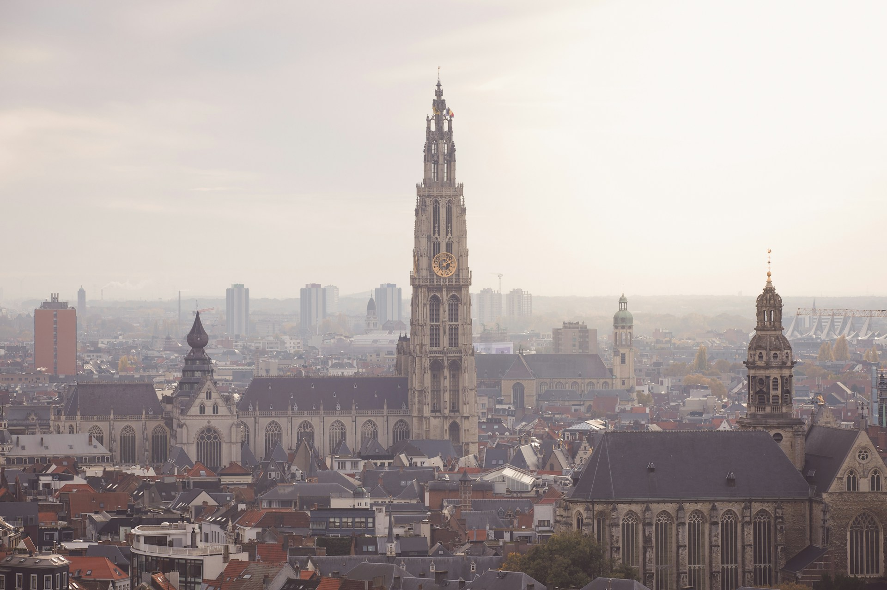
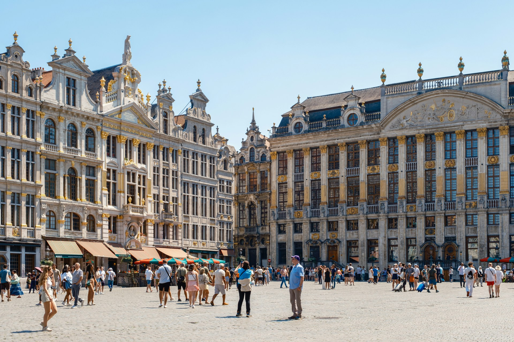
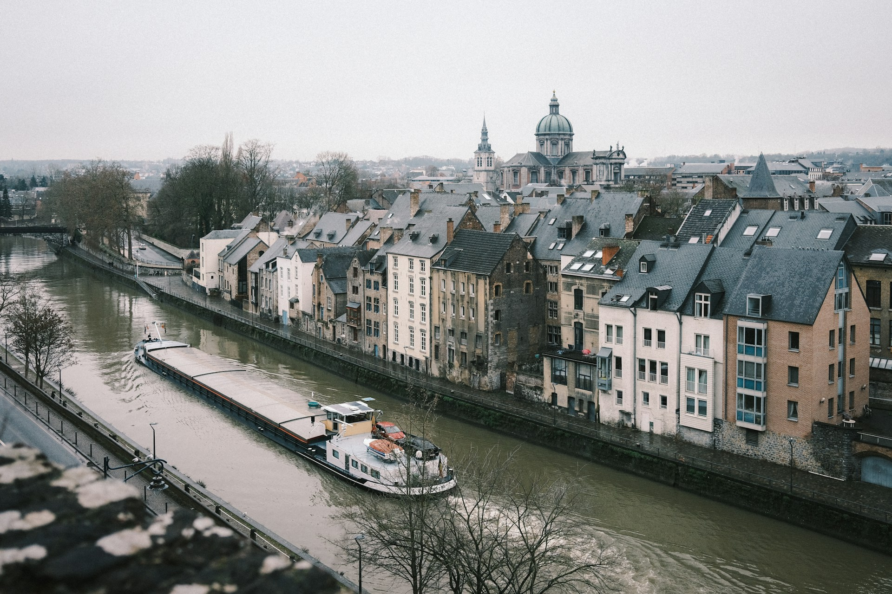
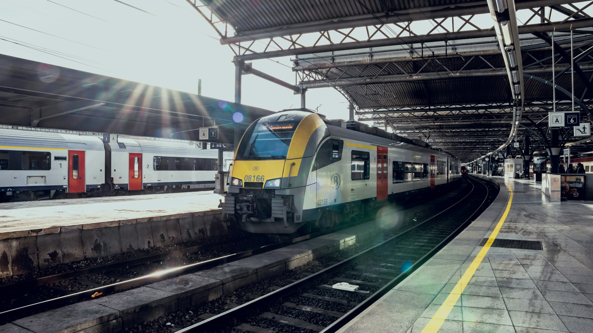
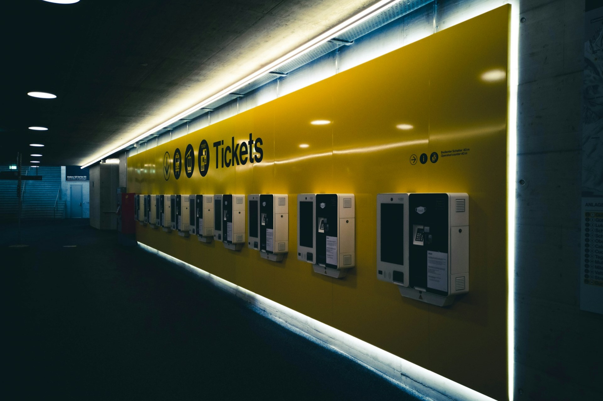
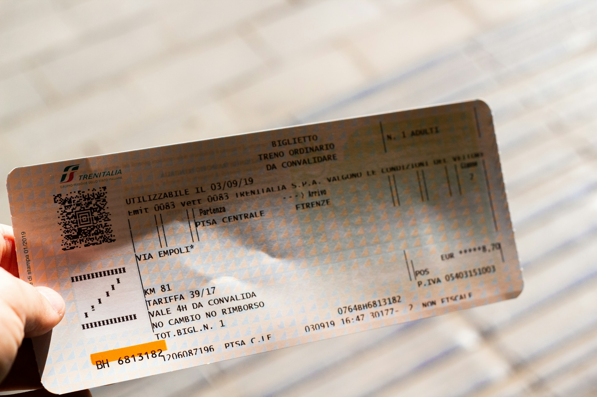
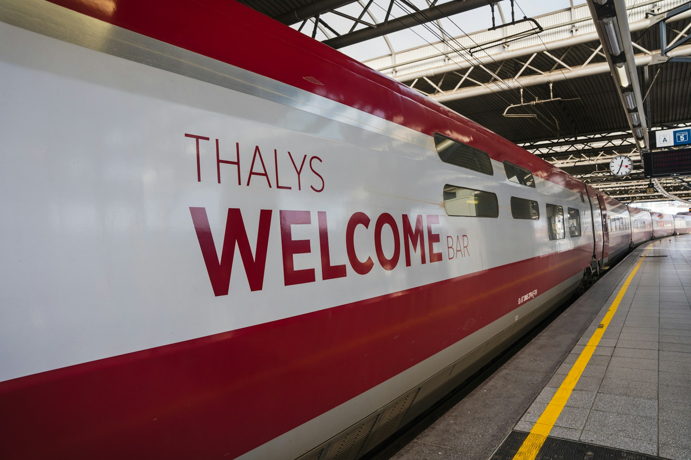
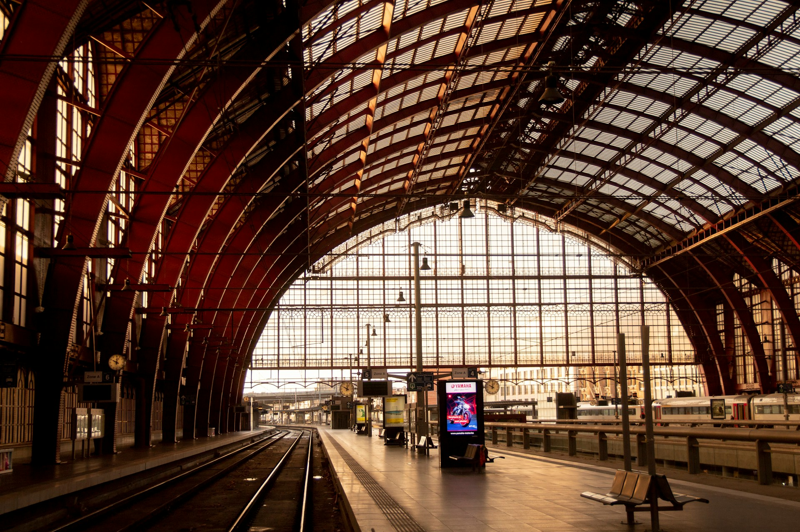
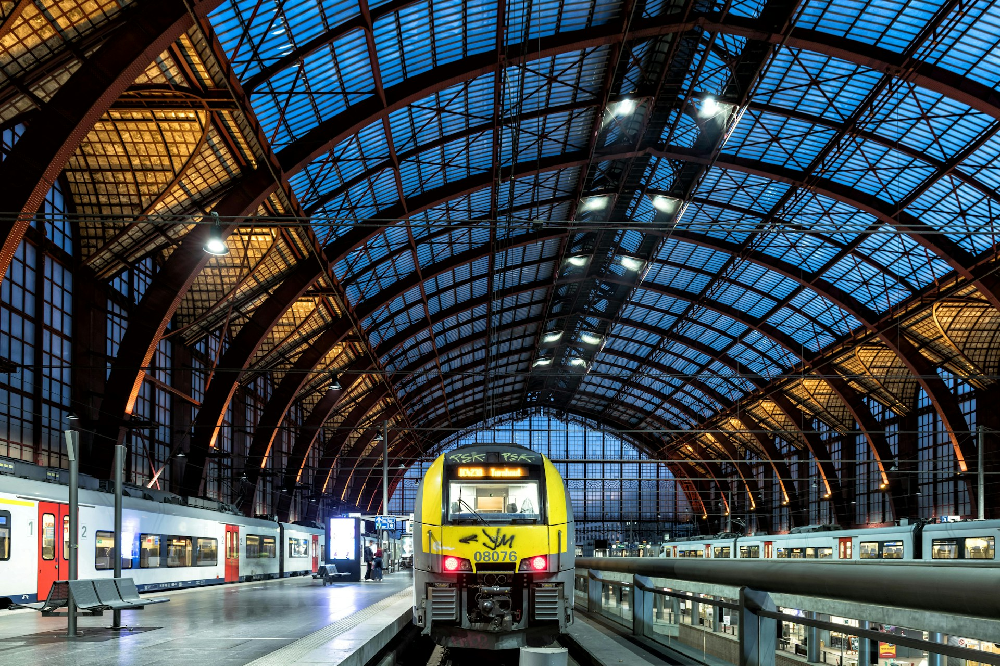

Welkom in België!
Bienvenue à Belgique! / Wilkommen in Belgien!België is een klein, maar veelzijdig land in het hart van Europa, het staat bekend om zijn rijke geschiedenis, culturele diversiteit en gevarieerde landschap.
België is verdeeld in drie regio's: Vlaanderen, Wallonië en het Brussels Hoofdstedelijk Gewest, elk met hun eigen talen en tradities.
Het land is beroemd om zijn heerlijke chocolade, verfijnde bieren en unieke gerechten zoals frieten en wafels, daarnaast huisvest België prachtige steden zoals Brussel, Antwerpen, Brugge en Gent, die bekendstaan om hun historische architectuur en levendige cultuur.
België speelt ook een belangrijke rol in Europa als gastland van de Europese Unie en de NAVO.
De must-sees van België
Antwerpen
Antwerpen, de grootste stad van Vlaanderen, staat bekend om haar indrukwekkende haven, diamanthandel en modewijk.Het historisch centrum biedt bezienswaardigheden zoals de imposante Onze-Lieve-Vrouwekathedraal en de sfeervolle Grote Markt.
Antwerpen is een echte kunststad, waar Rubens zijn sporen achterliet, en waar moderne kunst, mode en gastronomie op hoog niveau samenkomen.


Brussel / Bruxelles
Brussel, de hoofdstad van België en het politieke hart van Europa, is een levendige stad vol contrasten.Van de historische pracht van de Grote Markt tot het futuristische Atomium, Brussel biedt een boeiende mix van oud en nieuw.
De stad staat ook bekend om haar stripmuren, internationale restaurants en het iconische beeld van Manneken Pis, met een kosmopolitische sfeer en talrijke musea is Brussel een must-see.
Namur
Namur, de hoofdstad van Wallonië, ligt aan de samenvloeiing van de Maas en de Samber en wordt gedomineerd door een imposante citadel.De stad heeft een rijke geschiedenis en een charmant centrum met geplaveide straatjes, gezellige pleinen en prachtige kerken.
Namur biedt een rustige sfeer en is ideaal voor wandelingen langs de rivieren, culinaire verkenningen en het ontdekken van authentieke Belgische cultuur.


Reizen per trein in België
Reizen per trein door België is een comfortabele en efficiënte manier om het land te ontdekken.Dankzij het uitgebreide netwerk van de NMBS (Nationale Maatschappij der Belgische Spoorwegen) zijn de meeste steden en dorpen gemakkelijk bereikbaar.
Grote steden zoals Brussel, Antwerpen, Brugge, Gent, en Liège hebben frequente, rechtstreekse verbindingen en de reistijden zijn kort dankzij de compacte afstanden.
Treinen rijden regelmatig, en er zijn diverse ticketopties, waaronder weekendkortingen en voordelige tarieven voor jongeren en senioren.
Daarnaast zijn de treinstations vaak centraal gelegen, waardoor je snel toegang hebt tot de belangrijkste bezienswaardigheden en stadscentra.
Het Belgische treinnetwerk biedt ook internationale verbindingen met buurlanden, zodat je makkelijk van en naar plaatsen als Paris, Amsterdam en London reist.
Waar kan ik tickets kopen?
Er zijn verschillende manieren om je treinticket aan te kopen voor treinreizen in België:- Vanaf 30 dagen op voorhand via www.belgiantrain.be;
- Vanaf 30 dagen op voorhand via NMBS-app;
- In het station aan de loketten of ticketautomaat;
- Aan boord van de trein (mits het betalen van een supplement van €9,- per reiziger*).
*: Het supplement van €9,- dient niet betaald te worden voor bepaalde tickets die niet worden aangeboden aan de automaat (bv. tickets met FIP-korting, ...) of indien het station waar je bent opgestapt niet beschikt over een automaat of deze defect is.


Welk ticket heb ik nodig?
Voor de meeste reizen is een gewoon Standard Ticket de beste keuze, toch zijn er voor bepaalde momenten en leeftijdscategoriën speciale tarieven beschikbaar:Dit ticket is geldig voor één heen en terugreis vanaf vrijdagavond 19:00 tot en met de laatste treinverbinding op zondagavond.
In de Belgische schoolvakanties kun je als -26-jarige ook onbeperkt reizen met Youth Holidays.
Op weekdagen (maandag t.e.m. vrijdag) mag je met dit ticket enkel reizen vanaf 09:00, in het weekend en op feestdagen geldt er geen uurbeperking.
Kinderen jonger dan 12 jaar reizen gratis indien deze worden vergezeld van een volwassene met een geldig ticket.
Reis je doorheen België met Interrail, Eurail of FIP? Bekijk hieronder dan even hoe je dit doet in België!
Reizen met Interrail / Eurail in België
Makkelijker kunnen we het haast niet maken, met Interrail of Eurail mag je elke trein van de NMBS nemen.Enkel voor reizen van/naar Brussels Airport heb je nog een Brussels Airport Supplement van €6,70 per persoon (uitg. kinderen jonger dan 12) nodig.
- EuroCity Direct Brussel — Amsterdam: geen toeslag* en/of reservatieplicht;
- EuroCity Brussel — Rotterdam: geen toeslag en/of reservatieplicht;
- InterCity Brussel — Amsterdam: geen toeslag* en/of reservatieplicht;
- EuroCity Brussel — Paris: de regels rondom het gebruik van Interrail en Eurail op deze treinen vanaf 15/12/2024 zijn momenteel nog niet bekend;
- ICE Brussel — Frankfurt am Main: geen toeslag en/of reservatieplicht, een zitplaatsreservatie wordt wel aangeraden;
- TGV: reservatieplicht met toeslag;
- Eurostar: reservatieplicht met toeslag, meer info op www.eurostar.com;
- European Sleeper Brussel — Praha: reservatieplicht met toeslag.
*: een toeslag is niet nodig voor het traject tussen Rotterdam en Schiphol Airport / Amsterdam, ookal geeft de Interrail- of Eurail-app dit aan.


Reizen met FIP in België
Reizen met FIP is in België quasi even gemakkelijk als reizen met Interrail of Eurail, met je FIP-coupon voor de NMBS mag je elke NMBS-trein zonder toeslag of reservatieplicht nemen.Enkel voor reizen van/naar Brussels Airport heb je nog een Brussels Airport Supplement van €6,70 per persoon (uitg. kinderen jonger dan 12) nodig.
Tickets met FIP-korting kunnen niet worden aangekocht aan de ticketautomaten.
Aan boord van de trein zijn enkel digitale betalingen mogelijk, aan het loket is ook betaling met cash mogelijk.
- Richting Luxembourg (CFL): Athus (Fr.), Gouvy (Fr.) & Sterpenich (Fr.);
- Richting Duitsland (DB): Aachen Süd (Gr.);
- Richting Nederland (NS): Roosendaal (Gr.), Visé (Fr.);
- Richting Frankrijk (SNCF): Blandain (Fr.), Jeumont (Fr.), Tourcoing (Fr.).
- EuroCity Direct Brussel — Amsterdam: FIP wordt geaccepteerd op deze trein, u hebt zowel een coupon voor NMBS als voor NS nodig.
Deze trein mag niet worden gebruikt voor reizen tussen Brussel-Zuid en Antwerpen-Centraal. - EuroCity Brussel — Rotterdam: FIP wordt geaccepteerd op deze trein, voor reizen richting Nederland heeft u ook een coupon voor NS nodig.
- InterCity Brussel — Amsterdam: FIP wordt geaccepteerd op deze trein, voor reizen richting Nederland heeft u ook een coupon voor NS nodig.
- EuroCity Brussel — Paris: de regels rondom het gebruik van FIP op deze treinen vanaf 15/12/2024 zijn momenteel nog niet bekend.
- ICE Brussel — Frankfurt am Main: FIP wordt geaccepteerd op deze trein, voor reizen richting Duitsland heeft u ook een coupon voor DB nodig.
Deze trein mag niet worden gebruikt voor reizen tussen Brussel en Liège-Guillemins. - TGV: Reservatieplicht met toeslag, daarnaast is een coupon voor SNCF vereist.
- Eurostar: reservatieplicht met toeslag, daarnaast is een coupon voor Eurostar vereist.
FIP wordt niet geaccepteerd op de speciale Ski- en Zon-treinen richting Bourg-Saint-Maurice en Marseille. - Nightjet: reservatieplicht met toeslag, daarnaast is een coupon voor DB vereist, voor reizen richting Oostenrijk heeft u ook een coupon voor ÖBB nodig.
- European Sleeper: FIP wordt niet geaccepteerd op deze treinen.
Tussen Maastricht en Aachen Hbf wordt FIP niet geaccepteerd op deze trein.
Bovenstaande regels gelden ook voor Belgische spoorwegmedewerkers met een Benelux-vrijkaart of -vrijbiljet.
